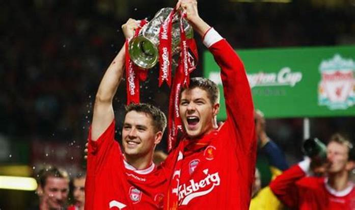
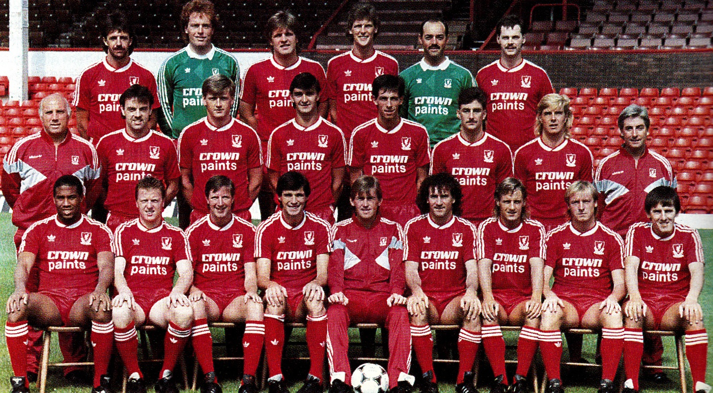
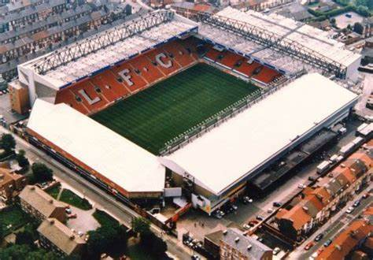

The history of Liverpool Football Club is divided into three periods:
1. History of Liverpool F.C. (1892–1959) – The club was founded in 1892 following a split from Everton F.C. and joined the Football League in 1893. The appointment of Tom Watson as manager resulted in the club's first successful period, in which they won two League Championships. Two League Championships were won in the 1920s and a further one was won in 1947. Following the club's fortunes declined and they were relegated to the Second Division in 1954.
2. History of Liverpool F.C. (1959–1985) – Bill Shankly was appointed as manager in 1959 and guided the club back into the First Division. Shankly's arrival laid the foundations for the club's success in the 1970s and 80s domestically and in European competition, as the club won numerous League Championships and four European Cups.
3. History of Liverpool F.C. (1985–present) – Following the Heysel Stadium disaster in 1985, English clubs were banned from European competitions until 1991. The club was still successful domestically winning three League Championships during this period. The 1990s saw a lack of success for the club as they struggled to repeat their success in the Premier League era. The club reached former heights in 2005 when they won the UEFA Champions League (formerly known as the European Cup) for a fifth time.
FC Liverpool has as many as 71 trophies in all competitions so far
Michael Owen and Steven Gerrard in their style
Liverpool for the first time in the Premier League
First stadium